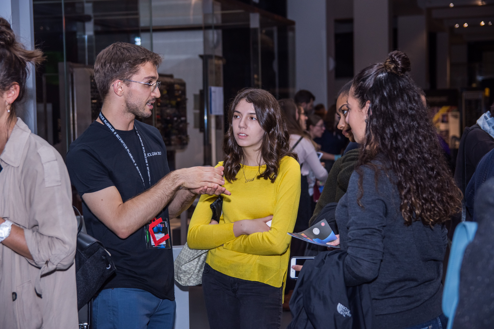
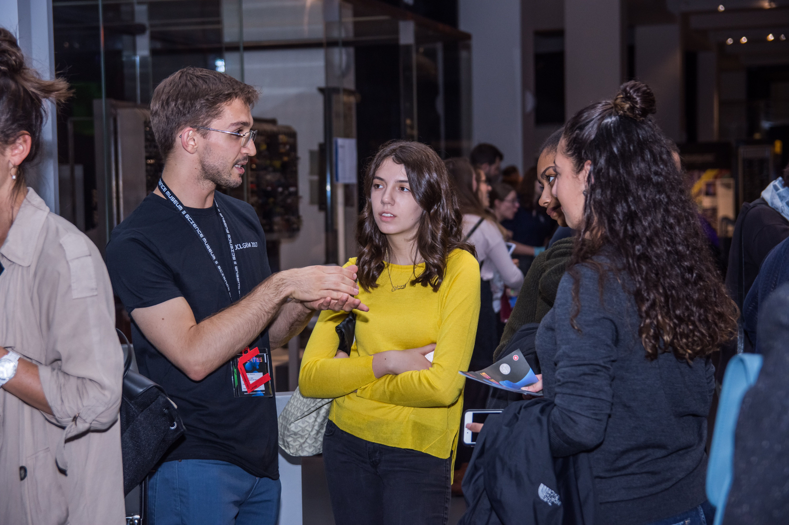

Intellectual Property
We love open-source and we believe that the future of synthetic biology lies in everyone doing it responsibly, transparently and with the best intentions. The culture at LIT is about enabling people to creatively innovate and not shut down ideas if no short-term benefit is apparent.
Still, as any starting company, one must play the game. To obtain funding and support, it is necessary to go from 0 to 1 – develop technologies that are at least 10x better than what is already available. To achieve this, protecting the intellectual property of our technologies is necessary. In the same way that Google made their TensorFlow software available for everyone to dabble with machine learning for free, we would like in the next few years to open-source the way biological light switches can be used to innovate in everyday life.
Perhaps naively, we started out by reaching to Glowee, a company that is focusing on integrating bioluminescence on the streets. Their response, maybe unsurprisingly, was of keeping information confidential.
 
